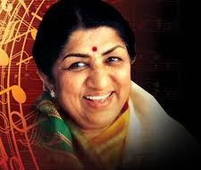

Lata Mangeshkar
1929-2022
Nightingale of India
Lata Mangeshkar born Hema Mangeshkar, 28 September 1929- 6 February 2022. was an Indian playback singer and occasional music composer. She is considered to be one of the greatest and most influential singers of the Indian subcontinent. Her voice was one of the unifying elements of the people of India, Pakistan, Bangladesh, and Nepal. Her contribution to the Indian music industry in a career spanning eight decades gained her honorific titles such as the "Queen of Melody", "Nightingale of India", and "Voice of the Millennium".
Mangeshkar recorded songs in over thirty-six Indian languages and a few foreign languages, though primarily in Hindi, Bengali, Nepali, and Marathi. She received several accolades and honors throughout her career. In 1989, the Dadasaheb Phalke Award was bestowed on her by the Government of India. In 2001, in recognition of her contributions to the nation, she was awarded the Bharat Ratna, becoming only the second singer to receive India's highest civilian honour. In 2007, France made her an Officer of the National Order of the Legion of Honour, the country's highest civilian award.
She was the recipient of three National Film Awards, 15 Bengal Film Journalists' Association Awards, four Filmfare Best Female Playback Awards, before declining further ones, two Filmfare Special Awards, the Filmfare Lifetime Achievement Award amongst others. In 1974, she became the first Indian playback singer to perform at the Royal Albert Hall in London, England.
She appeared in the Guinness World Records as the most recorded artist in history before being replaced by her sister, Asha Bhosle.
Mangeshkar recorded songs in over thirty-six Indian languages and a few foreign languages, though primarily in Hindi, Bengali, Nepali, and Marathi. She received several accolades and honors throughout her career. In 1989, the Dadasaheb Phalke Award was bestowed on her by the Government of India. In 2001, in recognition of her contributions to the nation, she was awarded the Bharat Ratna, becoming only the second singer to receive India's highest civilian honour. In 2007, France made her an Officer of the National Order of the Legion of Honour, the country's highest civilian award.
She was the recipient of three National Film Awards, 15 Bengal Film Journalists' Association Awards, four Filmfare Best Female Playback Awards, before declining further ones, two Filmfare Special Awards, the Filmfare Lifetime Achievement Award amongst others. In 1974, she became the first Indian playback singer to perform at the Royal Albert Hall in London, England.
She appeared in the Guinness World Records as the most recorded artist in history before being replaced by her sister, Asha Bhosle.
Biography
| Born | Hema Mangeshkar 28 September 1929 Indore, Indore State, British India (present-day Madhya Pradesh, India) |
| Died | 6 February 2022 (aged 92) Mumbai, Maharashtra, India |
| Resting place | Ashes scattered in the Godavari River at Ramkund, Nashik, Maharashtra, India |
| Other names | Queen of Melody Voice of the Millennium |
| Occupations | Playback singer, composer, film producer |
| Years active | 1942–2022 |
| Parent | Deenanath Mangeshkar (Father) |
| Honours | Padma Bhushan (1969) Dadasaheb Phalke Award (1989) Maharashtra Bhushan (1997) Padma Vibhushan (1999) Bharat Ratna (2001) Officer of the National Order of the Legion of Honour (2006) Member of Parliament, Rajya Sabha In office 22 November 1999 – 21 November 2005 |
| Constituency | Nominated (Arts) |
| Musical career | Filmi,classical, Nepalese, Musicghazals[1],Sufi[2], bhajans[3], folk[4],Gurbani[5],Bengali music[6],dangdut[7] |
| Instrument | Vocals |